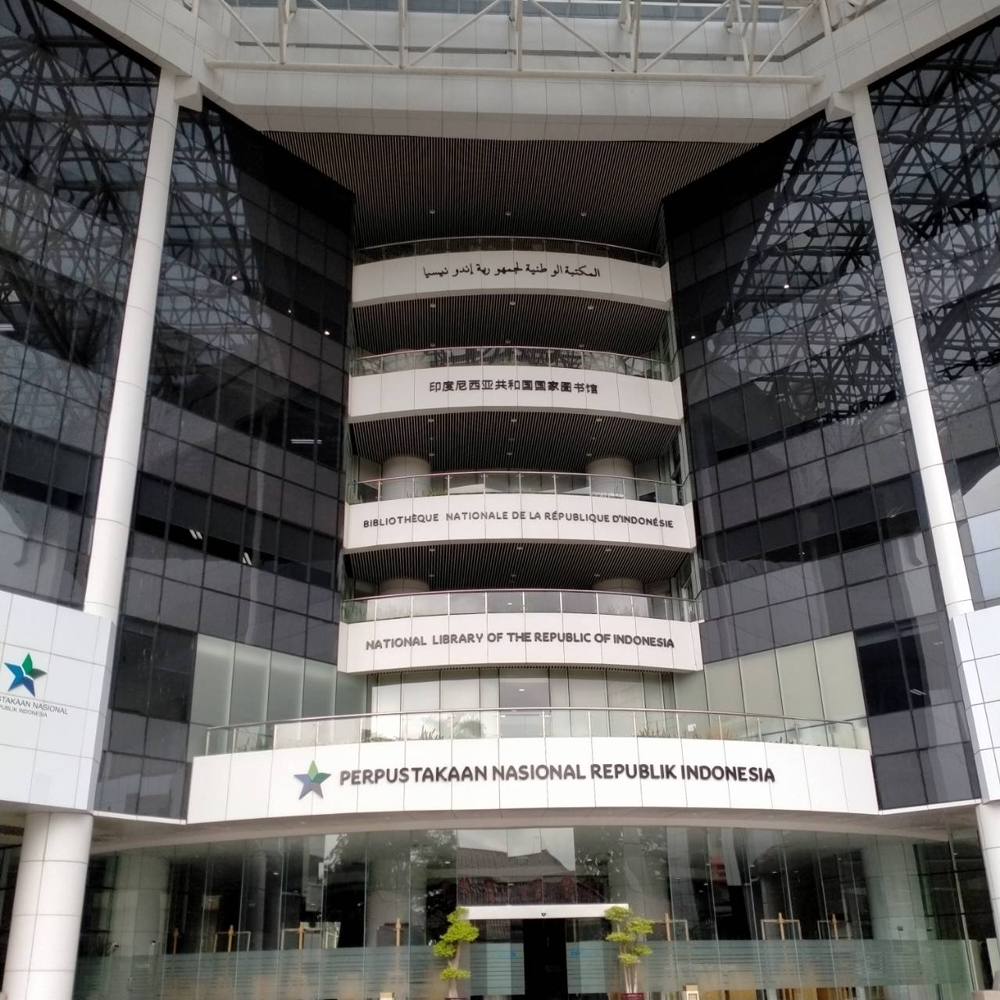

 Nasional Republik Indonesia (disingkat Perpusnas) adalah Lembaga Pemerintah Nonkementerian yang melaksanakan tugas pemerintahan dalam bidang perpustakaan yang berfungsi sebagai perpustakaan pembina, perpustakaan rujukan, perpustakaan deposit, perpustakaan penelitian, perpustakaan pelestarian, dan pusat jejaring perpustakaan, serta berkedudukan di ibu kota negara. Gedung Fasilitas Layanan Perpustakaan Nasional berlokasi di Jalan Medan Merdeka Selatan No.11, Jakarta dan sebagian besar perkantorannya di Jalan Salemba Raya No. 28A. Perpustakaan Nasional berada di bawah dan bertanggung jawab kepada Presiden. Pada tanggal 14 September 2017, Presiden Joko Widodo meresmikan Gedung Fasilitas Layanan Perpusnas baru yang merupakan perpustakaan nasional tertinggi di dunia (126,3 meter) dengan 24 lantai, ditambah tiga lantai parkir bawah tanah (basement).
Awalnya, Perpustakaan Nasional RI merupakan salah satu perwujudan dari penerapan dan pengembangan sistem nasional perpustakaan, secara menyeluruh dan terpadu, sejak dicanangkan pendiriannya tanggal 17 Mei 1980 oleh Menteri Pendidikan dan Kebudayaan, Daoed Joesoef. Ketika itu kedudukannya masih berada dalam lingkungan Departemen Pendidikan dan Kebudayaan setingkat eselon II di bawah Direktorat Jenderal Kebudayaan, dan badan ini merupakan hasil integrasi dari empat perpustakaan besar di Jakarta.
Website Perpustakaan: Perpustakaan Nasional Republik Indonesia| Fasilitas | Keterangan |
|---|---|
| Layanan Audiovisual | Layanan multimedia (audio visual) adalah layanan yang secara langsung bersentuhan dengan TI. Koleksi audio visual yang dimiliki adalah dalam bentuk CD, CD ROM, disket dan kaset . |
| Layanan Koleksi Monograf Terbuka | Monograf terbuka berarti buku bacaan di ruang baca itu bisa dipinjam dan dibaca. Ruang baca di lantai 21 cukup nyaman, selain ada meja baca, pengunjung yang hendak membaca buku juga bisa membaca sambil tiduran di kursi malas yang disediakan. |
| Layanan Anak, Lansia, dan Difabel | Layanan Lansia dan Disabilitas memiliki 3.276 judul buku edisi Braille dan 462 audio book atau buku yang disuarakan, yang meliputi biografi, fiksi, non-fiksi, buku agama, dan buku pengetahuan. Koleksi novel fiksi edisi Braille milik Perpustakaan Nasional (Perpusnas) cukup lengkap, mencakup beberapa novel yang sudah diangkat ke layar lebar seperti Dilan karya Pidi Baiq dan Bumi Manusia karya Pramoedya Ananta Toer. |
Pada lantai pertama, terdapat lobi utama dan juga loker untuk menitipkan barang sebelum naik ke ruang-ruang koleksi.
Selanjutnya pada lantai dua terdapat ruang layanan keanggotaan perpustakaan, penelusuran informasi, dan ruang auditorium.
Pada lantai tiga terdapat zona promosi budaya baca, sedangkan pada lantai empat terdapat ruang pameran dan kantin
Lantai lima gedung Perpusnas terdapat perkantoran dan lantai enamnya terdapat data center serta musholla
Lantai 7 pada perpustakaan terdapat layanan anak, lansia dan disabilitas. Lalu lantai delapan layanan audiovisual serta lantai sembilan ada layanan naskah nusantara
Lantai 10 dan 11 berisi penyimpanan koleksi monograf tertutup, sedangkan lantai 12 dan 13 adalah ruang baca untuk koleksi monograf tertutup
Lantai 14 berisi layanan koleksi buku langka dan lantai 15 terdapat layanan referensi, koleksi online, serta ilmu perpustakaan
Lantai 16 terdapat layanan koleksi foto, peta, dan lukisan. Sedangkan lantai 17 dan 18 didalamnya terdapat kantor akademik ilmu pengetahuan indonesia
Lantai 19 ada layanan multimedia dan lantai 20 ada layanan koleksi berkala mutakhir serta mancanegara
Kedua lantai tersebut terdapat layanan koleksi monograf terbuka
Lantai 23 terdapat layanan koleksi majalah terjilid. Sedangkan pada lantai terakhir yaitu lantai 24, terdapat layanan koleksi budaya nusantara, executive lounge , dan ruang penerimaan tamu mancanegara
Berikut salah satu video dari sekian banyaknya vlog pergi ke PERPUSNAS yang bisa dijadikan sebagai bayangan bagaimana perpustakaannya itu